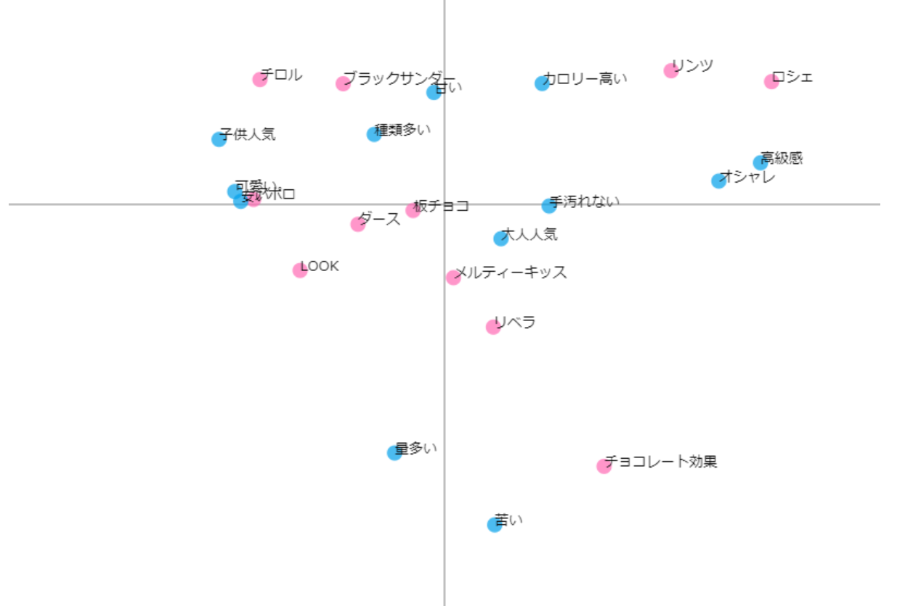

コレスポンデンス分析
チョコレートの種類や味、値段などを比較
１．散布図

２．クロス集計表
３．表からわかること
・表の右上は高級感とオシャレ、カロリー高いという項目
→オシャレなパッケージだと高級感が出る。
→高級なものはカロリーが高い？（他の商品も調べてみたくなった！）
・右下は大人人気、手が汚れない、苦いという項目
→仕事の合間にチョコを食べることが多そうな大人には手を汚さずに食べられることが重要なのかもと思った。
→苦いものは子供人気とは遠いところにあるのは納得。
・左上は甘い、可愛い、安い、子供人気、種類多いという項目
→甘い、可愛い、安いは子供がその商品を選ぶ要因になっている。
・ダースは子供からも大人からも同じくらい人気がある。